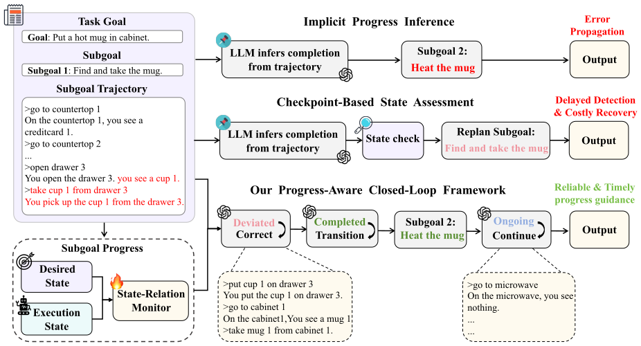
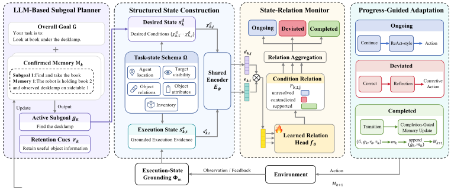
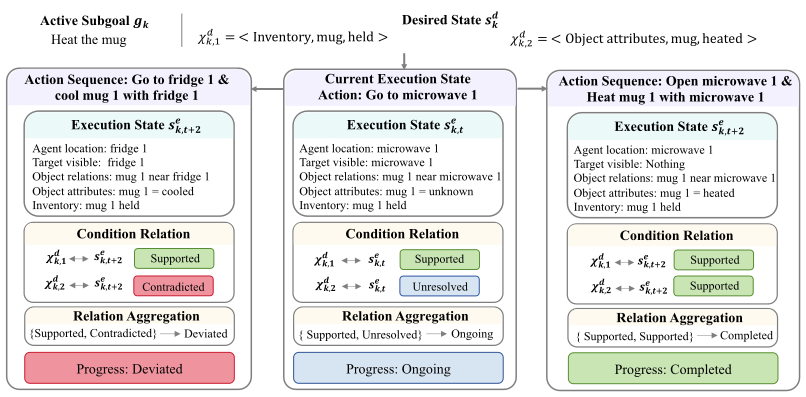
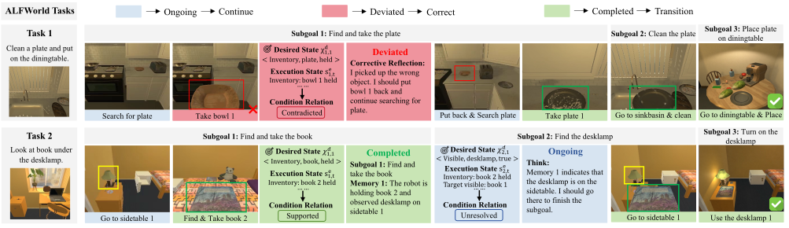

LLM-Based Subgoal Planner
Generates one active semantic subgoal and retention cues from the overall goal and confirmed cross-subgoal memory.

Long-horizon robotic tasks are commonly decomposed into semantic subgoals to simplify planning. However, subgoal progress in LLM-based planning is typically inferred implicitly from interaction histories. Inaccurate estimates can misguide execution and allow local errors to propagate. To address this, we propose ProLoop, a Progress-Aware Closed-Loop framework that derives explicit subgoal progress from structured relations between desired and execution states. A learned State-Relation Monitor assesses these relations, which are then aggregated into subgoal progress as ongoing, deviated, or completed. The resulting progress guides execution adaptation, enabling reliable progress-aware control throughout execution. Experiments on AgentBoard ALFWorld and a real-world robotic platform show that ProLoop improves success rate by 12.94% overall and by 15.46% on Hard tasks, while reducing environment interactions by 32.3%.
Generates one active semantic subgoal and retention cues from the overall goal and confirmed cross-subgoal memory.
Converts the desired subgoal outcome and evolving execution information into comparable desired and execution states under a shared task-state schema.
Assesses each desired condition against the current execution state and aggregates supported, unresolved, or contradicted relations into ongoing, deviated, or completed progress.
Uses subgoal progress to continue execution, trigger targeted correction, or transition to the next subgoal with a completion-gated memory update.


In this section, we evaluate ProLoop on the AgentBoard ALFWorld benchmark under different task difficulties and LLM backbones. The results demonstrate consistent improvements in overall task performance, with particularly pronounced gains on Hard tasks involving more subgoals.
| Method | Overall SR ↑ | Overall PR ↑ | GA ↑ | Easy SR ↑ | Easy PR ↑ | Hard SR ↑ | Hard PR ↑ |
|---|
Following AgentBoard’s difficulty labels, the evaluation set contains 24 Easy and 110 Hard tasks, with three and four benchmark-defined subgoals, respectively. Each episode is capped at 30 environment interactions, and all methods follow the same data split, interaction budget, and evaluation protocol for a consistent comparison across all methods.
ProLoop requires only 10.14 environment interactions per episode, the lowest among all methods. Compared with Reason-Only, it reduces environment interactions by 32.31% and token usage by 53.96%. Its 25,191 tokens per episode are the second lowest overall, indicating a favorable balance between task performance and resource efficiency.
ProLoop achieves 98.66% on-time transitions versus 68.70% for the Implicit LLM. Only 1.34% are delayed, with no premature or missed transitions observed in the evaluated runs. These results suggest that explicit progress assessment supports continued execution until completion and timely transitions thereafter, enabling reliable closed-loop adaptation.
| Method | Overall SR ↑ | Overall PR ↑ | Easy SR ↑ | Hard SR ↑ |
|---|---|---|---|---|
| Ours full | 96.52 | 97.39 | 95.83 | 96.67 |
| w/o Progress Loop | 85.07 | 91.92 | 95.83 | 82.73 |
| w/o Summary | 92.54 | 96.08 | 100.00 | 90.91 |
| w/o Both | 83.58 | 93.97 | 95.83 | 80.91 |
| w/o Relation Head | 86.57 | 93.97 | 95.83 | 84.55 |

We further validate ProLoop on a dual-arm mobile robot equipped with a RealSense D435i head camera, using Qwen3.8-flash as the VLM backbone. The robot executes semantic subgoals through four atomic skills: Grasp, Place, Move_to, and Observe_state. We evaluate ProLoop on two representative tasks, breakfast preparation and tabletop tidying, with 10 trials for each task. Across 20 trials, ProLoop achieves an overall success rate of 90%. Fig. 5 illustrates a representative six-subgoal breakfast preparation task, showing how progress assessment supports continued execution, correction, and subgoal transition throughout the task.

Anonymous Author(s)
Paper ↗